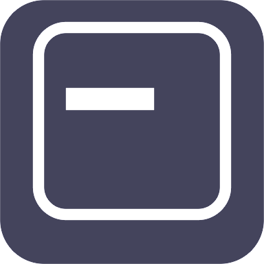

Draw and Paint
Processing transition - p5*js Examples
Los siguientes ejemplos tienen el propósito de desarrollar y practicar la transición entre el lenguaje Processing y el lenguaje p5.js observando sus principales diferencias, ya que ambos lenguajes se ven muy similar, y cómo convertir de uno a otro.
Este programa está basado en la unión de algunos sketches vistos en los ejemplos anteriores. Como valor agregado se hará uso de la función 'createGraphics' tal como se propone en el ejemplo encontrado en el sitio web processing.org, en el lenguaje Processing, con el fin de crear un nuevo lienzo dentro del canvas principal y que todos los elementos solo se creen en este. Este programa crea una ventana con un ancho de 600px y una altura de 400px, un lienzo de la mitad de tamaño en el centro del canvas principal y luego empieza a dibujar líneas negras en la posición donde se encuentre el mouse  siempre que se tenga presionado el botón izquierdo del mouse . Es posible cambiar el grosor y el color de la línea, dando la ilusión o posibilidad de dibujar y pintar con el mouse como si fuera un pincel sobre un lienzo blanco.
siempre que se tenga presionado el botón izquierdo del mouse . Es posible cambiar el grosor y el color de la línea, dando la ilusión o posibilidad de dibujar y pintar con el mouse como si fuera un pincel sobre un lienzo blanco.
Comandos por teclado
Aumentar (+) grosor de línea =
Color Rojo =

Color Verde =

Color Azul =

Color Negro =

Color Blanco =
Disminuir (-) grosor de línea =
Color Magenta =
Color Amarillo =
Color Cian =
Color Naranja =
Color Purpura =

Nota: El color blanco se puede utilizar como borrador.
p5*js Code
let strokeLine = 5; // Variable para definir el grosor de la linea
// Variables para definir el color de la linea
let r = 0;
let g = 0;
let b = 0;
function setup() {
createCanvas(600, 400);
background(210);
pg = createGraphics(300, 350);
pg.background(255);
}
function draw() {
// Ejecuta el metodo touchMoved() cada vez que se presiona el click del mouse
if (mouseIsPressed) {
touchMoved();
}
//imageMode(CENTER);
// Dibuja el bufer offscree en la pantalla con image()
image(pg, 150, 25);
}
function touchMoved() {
pg.strokeWeight(strokeLine); // Grosor de la linea
pg.stroke(r,g,b); // Color de la linea
// Dibuja una linea en las cordenadas del mouse
pg.line(mouseX-150, mouseY-25, pmouseX-150, pmouseY-25);
return false;
}
// Se ejecuta cuando se presiona cualquier tecla
function keyPressed() {
if (key === '+') { // Aumenta el grosor de la linea
strokeLine = strokeLine+2;
} else if (key === '-') { // Disminuye el grosor de la linea
strokeLine = abs(strokeLine-2);
} // Cambia el color de la linea
else if (key === 'w') { // Blanco
r = 255;
g = 255;
b = 255;
} else if (key === 'k') { // Negro
r = 0;
g = 0;
b = 0;
} else if (key === 'r') { // Rojo
r = 255;
g = 0;
b = 0;
} else if (key === 'g') { // Verde
r = 0;
g = 255;
b = 0;
} else if (key === 'b') { // Azul
r = 0;
g = 0;
b = 255;
}
// Nota: Se requieren mas condiciones para agregar mas colores
}